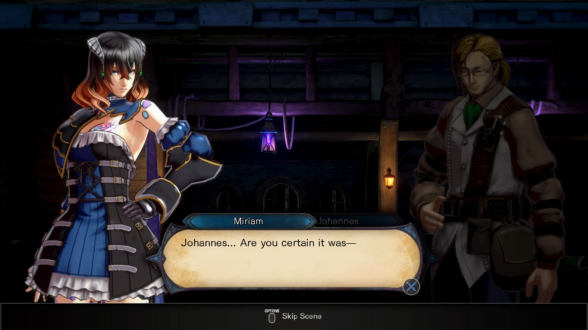
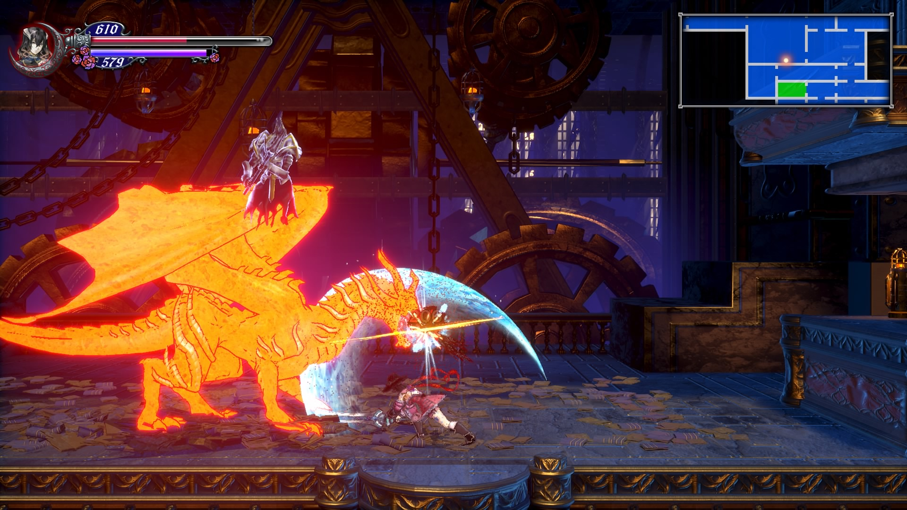
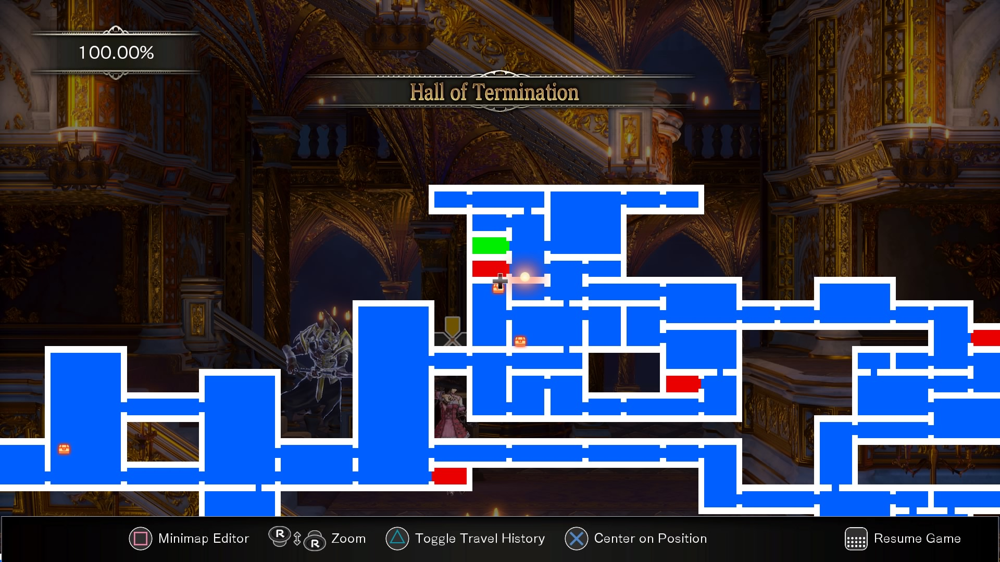

Bloodstained: Ritual of the Night
Reviewed on a base Playstation 4
Bloodstained Ritual of the Night is a 2.5D role playing game(rpg), also known as Metroidvania style of game. This game is considered to be the spiritual successor to Castlevania: Symphony of the Night.

The main character you play as is Miriam, a human who has been infused with crystals that draw demonic power. Miriam has been in a coma for ten years and has finally awaken to stop her friend Gebel from bringing demons into the world.
There is a few cutscenes that show major events happening within the story and the rest is told through semi static images with a dialogue box. The story is straight foward and easy to follow with twist and turns along the way. The story overall is interesting and some of the lore is hidden in items and books if you want to delve deeper into the world of Bloodstained.
The gameplay consists of defeating enemies to gain better gear to prepare for the next boss fight aswell as exploring every room as possible. Miriam has a variety of tools at her disposal from, melee weapons, firearms, and crystals; all of these can be earned from defeating enemies, looting chests, quests and crafting. Miriam can also craft, prepare meals, sell and buy items thanks to her companions. Crystals is one of the most important items in the game that give Miriam different buffs and abilities that can turn the battle in her favor; these crystals can stack and be enhanced upto grade nine. There is a good amount of enemy variation with over 120 different types, including bosses. The castle is epic with different sections that are interconnected and never feel the same and are stunning. The castle is explorable anyway you want, but some areas require a certain ability or equipment to progress.
The game isn't too difficult as long as you're well equipped and properly leveled. Bloodstained is old school with no checkpoint system, which means if you game over, its back to your last manual save. In order to save there are specific save rooms indicated by a red box only after discovering them around the castle aswell as a fast travel room with a green box; i'd recommend saving as ofthen as you can. Over the course of my 20 hours there have been a few glitches that aren't game breaking, but there are certain times where the frame rate dips. Bloodstained Ritual of the Night has a great atmosphere, a fitting score, great level, character designs, and a good story; there is plenty of variety overall that keeps it fresh and exciting. Bloodstained is worth experiencing especially if you're a fan of the Metroidvania genre and is a good entry point for newcomers.